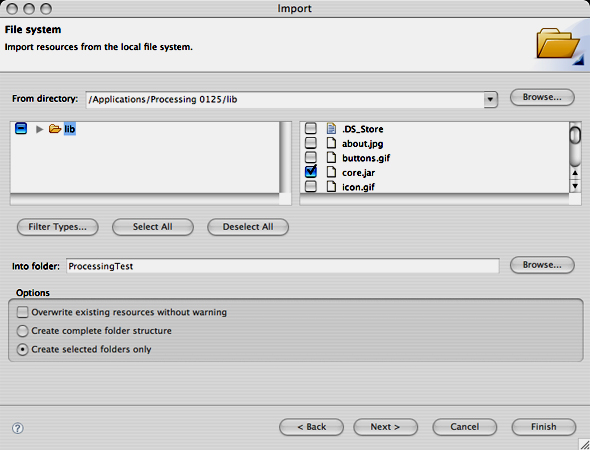
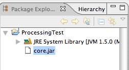
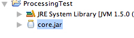
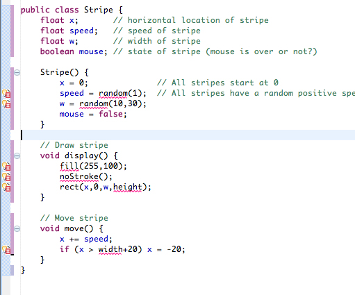

This tutorial is for Processing version 1.0+. If you see any errors or have comments, please let us know.
This tutorial assumes you already have Java and Processing installed on your computer. This is also not an Eclipse tutorial, but just covers the basics to get you up and running with Processing in Eclipse.
Step 1. Download and install Eclipse
Grab "Eclipse IDE for Java Developers" from http://www.eclipse.org/downloads/. When you first run eclipse, it will ask you for a workspace directory. This is the directory where you will store your project files so pick something reasonable that you will remember.
Step 2. Create a new project.
If you see a Welcome screen, go ahead and close it. Then go to FILE --> NEW PROJECT and select "Java Project." Click next. Enter your project name (for example, "TestProcessing") and select "Finish."
Step 3. Import the Processing libraries
Eclipse doesn't know anything about Processing so we'll have to go and get the Processing libraries ourselves. One way to do this is by pointing Eclipse to Processing's "lib" directory (see this tutorial), however, because we intend on sharing the project via a CVS, it's a good idea to copy the necessary Processing files into the project folder itself so that everything stays together. Go to:
FILE --> IMPORT --> GENERAL --> FILE SYSTEM.
Click next. Click browse and find the Processing application. On Windows you will then want to look inside the directory called "lib", but on Mac (for Processing 1.0=) you'll have to go inside the application's "package contents": Processing->Contents->Resources->Java. Select the file "core.jar" inside the lib (PC) or Java (Mac) folder.

Click "finish."
You should now see "core.jar" listed under your project in the package explorer.

Right-click on the file and select
BUILD PATH --> ADD TO BUILD PATH.
The "core.jar" file should now appear with a jar icon. (Note this right-click option will only show up in the "Package Explorer." If you are in the "Project Explorer" or some other view, switch by going to WINDOW --> SHOW VIEW --> PACKAGE EXPLORER.)

Step 4. Create a class and write your code!
Go to: FILE --> NEW --> CLASS
Enter in a class name "MyProcessingSketch" and click finish. Eclipse may yell at you and say "The use of the default package is discouraged." We can't really blame them for getting upset. Packages in Java provide a nice means for organizing your classes and this is a good thing. Nevertheless, for just getting this example working, we can skip thinking about packages.
After selecting finish, you'll see the following code:
public class MyProcessingSketch {
}
Eclipse is being nice and filling in the class definition for us. Thank you Eclipse! Now, if we want this class to be a Processing sketch, we've got to add some code:
- Import the core Processing library: "import processing.core.*;"
- Extend PApplet. PApplet is the parent Processing class that allows us to have access to all the Processing goodies.
- Write setup() and draw() (and specify "public" for these Processing functions).
import processing.core.*;
public class MyProcessingSketch extends PApplet {
public void setup() {
size(200,200);
background(0);
}
public void draw() {
stroke(255);
if (mousePressed) {
line(mouseX,mouseY,pmouseX,pmouseY);
}
}
}
Step 5. Run!
Go to: RUN --> RUN AS --> JAVA APPLET
For most things, you are often going to want to run your code as a Java Application (rather than applet) and turn on Processing's present mode. You can do this by adding a main() function to your code.
public static void main(String args[]) {
PApplet.main(new String[] { "--present", "MyProcessingSketch" });
}
Note that the String "MyProcessingSketch" must match the name of your class (and if it is in a package, should include the package, i.e. packagename.MyProcessingSketch).
Once you've added the main() function, you can select:
RUN --> RUN AS --> JAVA APPLICATION
Processing in Eclipse with Multiple Classes
Take a look at this example Processing sketch. The example is object-oriented and contains a class called "Stripe." In Processing, all classes are treated as "inner classes," meaning they are not individual entities unto themselves, but rather are classes inside of the larger PApplet. This is why you can do anything you can do in a PApplet inside of the Stripe class. You can draw onto the window calling rect() and access the PApplet variables such as width and height. To get this example working in Eclipse, it's perfectly reasonable to just copy it in as is and include the Stripe class code below setup() and draw() inside the parent PApplet class. However, the inner class methodology can quickly become unwieldy in the case of larger applications with lots and lots of classes.
And so we find ourselves in need of a means for creating separate Java classes in Eclipse that we can use in conjunction with a Processing-based application.
First thing first, we can put all the code that is not the Stripe class in a Java class like with the first example.
import processing.core.*;
public class MyProcessingSketch extends PApplet {
// An array of stripes
Stripe[] stripes = new Stripe[50];
public void setup() {
size(200,200);
// Initialize all "stripes"
for (int i = 0; i < stripes.length; i++) {
stripes[i] = new Stripe();
}
}
public void draw() {
background(100);
// Move and display all "stripes"
for (int i = 0; i < stripes.length; i++) {
stripes[i].move();
stripes[i].display();
}
}
}
Second, we create a new class called Stripe.
FILE --> NEW --> CLASS. Name it "Stripe." Click "finish."
If we add the Processing code, Eclipse will give us a bunch of errors.

The errors are all on lines where we call a Processing function (such as rect()) or reference a Processing variable (such as width). This is because a Stripe is not a PApplet and knows nothing about PApplets! We might be tempted to have Stripe extend PApplet, but this would be a fatal error. A Stripe is not a PApplet. A Stripe is a rectangular object that we want to draw onto a PApplet. What PApplet do we want to draw onto? The PApplet that is MyProcessingSketch. Instead of extending PApplet, we simply want to tell a Stripe object about a MyProcessingSketch.
public class Stripe {
PApplet parent; // The parent PApplet that we will render ourselves onto
In the constructor, we initialize the parent:
Stripe(PApplet p) {
parent = p;
And then anytime we want to call a Processing function, we access it via the parent variable.
// Draw stripe
void display() {
parent.fill(255,100);
parent.noStroke();
parent.rect(x,0,w,parent.height);
}
Here's the whole thing together:
import processing.core.PApplet;
public class Stripe {
float x; // horizontal location of stripe
float speed; // speed of stripe
float w; // width of stripe
boolean mouse; // state of stripe (mouse is over or not?)
PApplet parent; // The parent PApplet that we will render ourselves onto
Stripe(PApplet p) {
parent = p;
x = 0; // All stripes start at 0
speed = parent.random(1); // All stripes have a random positive speed
w = parent.random(10,30);
mouse = false;
}
// Draw stripe
void display() {
parent.fill(255,100);
parent.noStroke();
parent.rect(x,0,w,parent.height);
}
// Move stripe
void move() {
x += speed;
if (x > parent.width+20) x = -20;
}
}
Finally, the last change we have to make is how we call the constructor. Previously, we had:
stripes[i] = new Stripe();
But now when we construct a Stripe object, we must pass in a reference to a PApplet. And here, the PApplet is this, a reference to ourselves, the PApplet we are right now, MyProcessingSketch.
stripes[i] = new Stripe(this);
Here is the full project folder for download.
Another important note. The Processing "color" primitive does not exist in Java. In fact, in Processing a "color" is really just an integer (32 bits with red, green, blue, and alpha components). Processing translates "color" to "int", but
Eclipse won't do that for you. So instead of saying:
color pink = color(255,200,200);
you should say:
int pink = color(255,200,200);
and if you are in another class and have to refer to the "parent" PApplet:
int pink = parent.color(255,200,200);